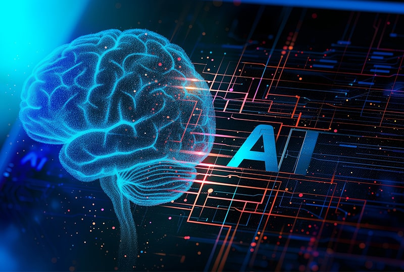
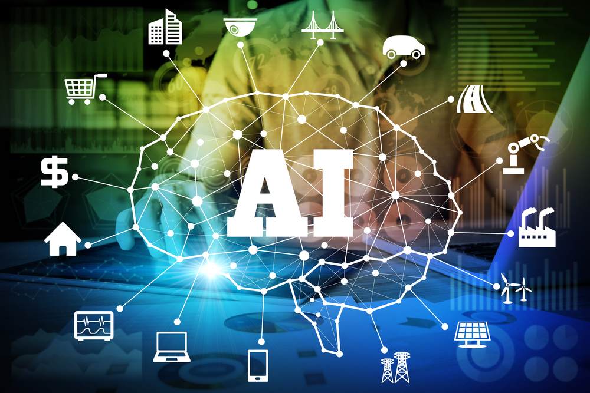
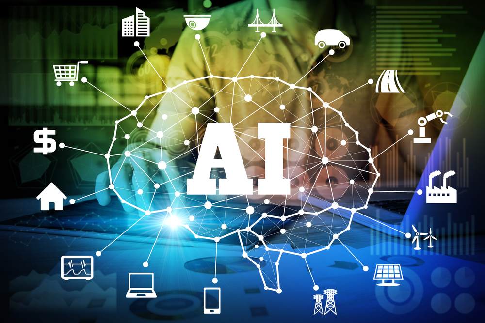

AI and Machine Learning
Artificial Intelligence (AI) and Machine Learning are revolutionizing the way machines learn from data and make decisions. These technologies power everything from smart assistants to self-driving cars, shaping a smarter and more automated world.
History of AI Development
The development of Artificial Intelligence (AI) began in the 1950s when scientists first explored the idea of creating machines that could think like humans. In 1956, the term "Artificial Intelligence" was officially introduced at a conference at Dartmouth College, marking the start of AI as a field of study. Early efforts focused on basic problem-solving and symbolic logic, but limited computing power held progress back. In the 1980s, AI research saw renewed interest through "expert systems," which used programmed rules to make decisions. However, these systems struggled with flexibility and real-world data.
A major breakthrough came in the 2000s with the rise of machine learning — where computers learn from data instead of just following fixed rules. As computing power increased and large datasets became available, AI rapidly evolved. The 2010s brought deep learning, a powerful form of AI that uses neural networks to recognize patterns in images, speech, and text. This led to technologies like voice assistants, facial recognition, and chatbots. Today, AI continues to grow rapidly, powering everything from search engines and recommendation systems to autonomous vehicles and medical diagnostics.
Pictures
 

How AI works and their training process
Artificial Intelligence (AI) works by enabling machines to mimic human intelligence, such as recognizing patterns, making decisions, or understanding language. At the core of AI is a process called machine learning, where algorithms learn from large sets of data instead of being manually programmed. The training process begins by feeding the AI system a massive amount of labeled data — for example, images of cats and dogs — so it can learn to recognize patterns and make accurate predictions. During training, the AI adjusts internal parameters through repeated trial and error, guided by a mathematical model called a neural network. This network processes input data through layers, gradually improving its ability to detect correct outcomes. Over time, with enough data and computing power, the system "learns" to perform tasks like recognizing faces, translating languages, or recommending videos.
More advanced AI, like ChatGPT, is trained on diverse text sources and fine-tuned to generate human-like responses. The quality of an AI's performance heavily depends on the quality and diversity of its training data, the model design, and the optimization process used to reduce errors.
Conclusion
Artificial Intelligence has come a long way from simple rule-based systems to powerful models capable of learning, adapting, and reasoning like humans. As AI continues to evolve, it holds the potential to revolutionize industries, enhance daily life, and solve complex global challenges.